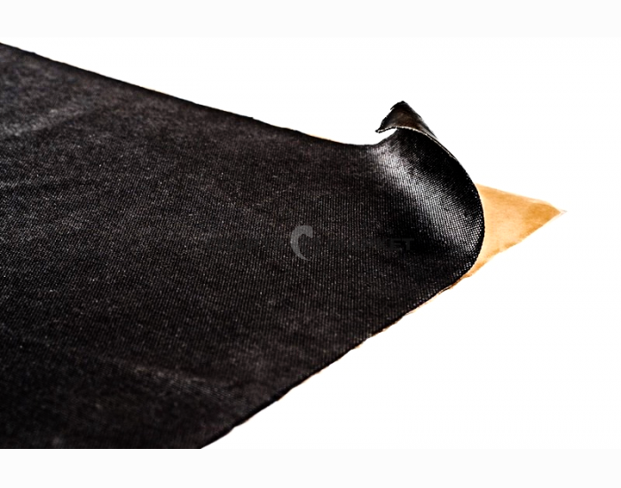

StP NoiseBlock 2
Краткое описание товара
NoiseBlock 2 мм — звукоизолирующий самоклеящийся материал. Представляет собой многослойную конструкцию, состоящую из липкого полимерного слоя, защищенного антиадгезионной бумагой, и лицевого слоя из нетканого полотна.Характеристики товара
| Общие | |||||||
|---|---|---|---|---|---|---|---|
| № | Наименование | Значение | TM | ||||
| 1 | Самоклеящийся материал: | да | |||||
| 2 | Толщина материала: | 2 мм | |||||
| 3 | Монтаж с использованием промышленного фена: | нет | |||||
| 4 | Размер листа: | 57×35 см | |||||
| 5 | Уровень звукоизоляции, Дб: | 30 | |||||
| 6 | Тип: | Звукоизоляционный материал | |||||
Полное описание товара
StP NoiseBlock 2 — звукоизолирующий самоклеящийся материал. Представляет собой многослойную конструкцию, состоящую из липкого полимерного слоя, защищенного антиадгезионной бумагой, и лицевого слоя из нетканого полотна. Монтируется на дополнительный относящий слой. В качестве относящего слоя может использоваться СПЛЭН, АКЦЕНТ, БАРЬЕР или другой материал на основе вспененного полиэтилена. Эффект от применения материала достигается путем создания звукоизолирующего «ковра» над металлическими элементами кузова автомобиля.Область применения:
пол салона и багажника.
Рекомендации по монтажу:
Материал монтируется на слой вспененного пенополиэтилена. Не требует нагрева при монтаже. Температура рабочего помещения должна составлять от 18 до 30°С. Поверхность перед монтажом StP NoiseBlock 2 очищается от пыли и загрязнений. Материал освобождается от антиадгезионной бумаги и тщательно прижимается к поверхности, путем разглаживания руками от центра к краям, избегая образования воздушных пузырей.